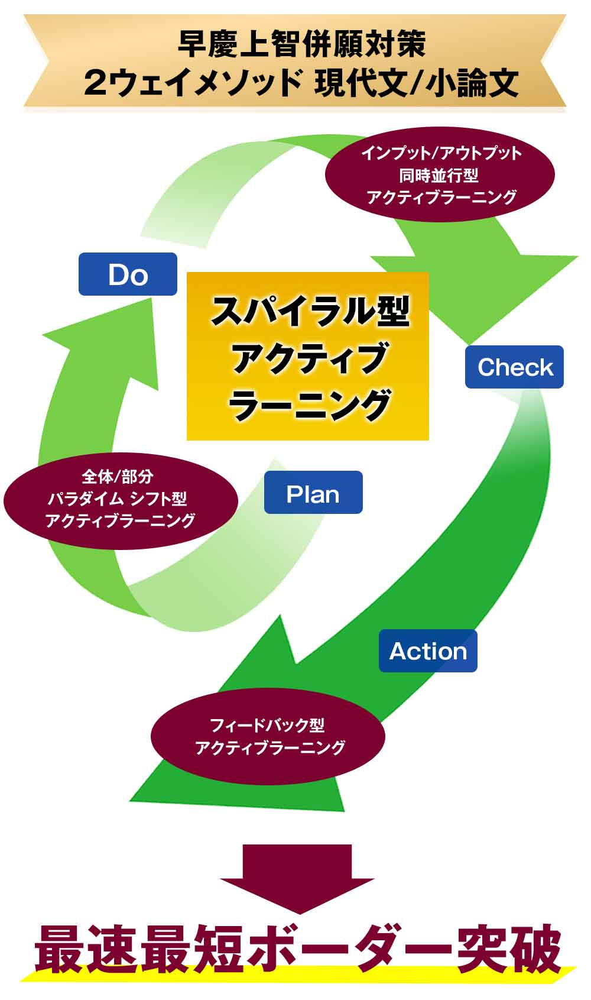
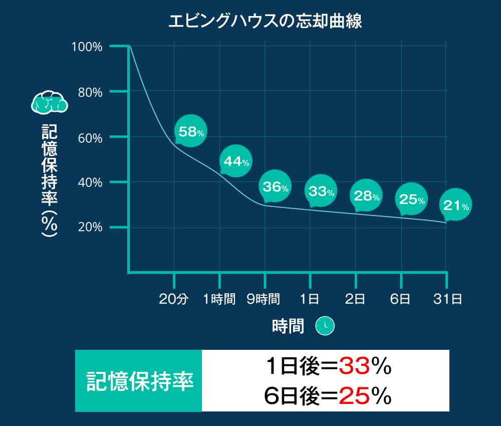
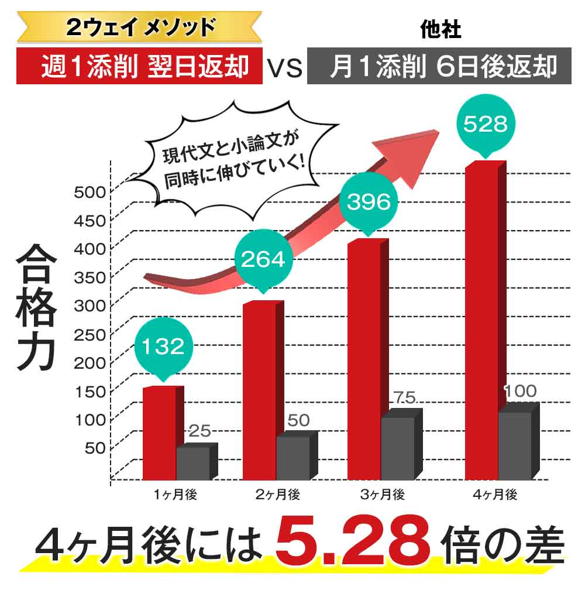
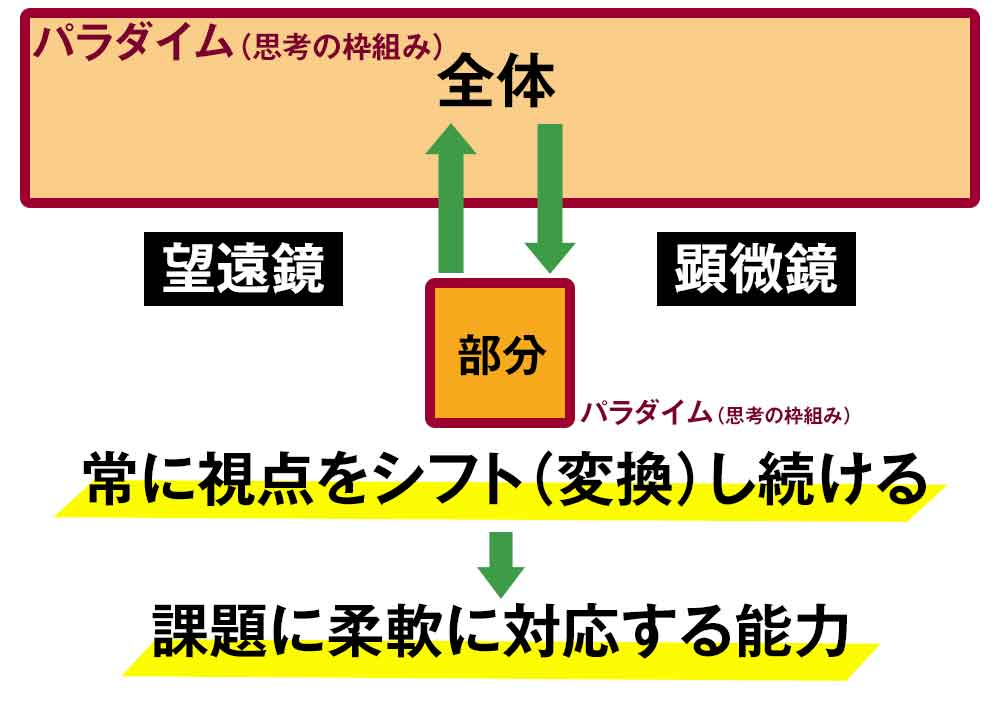
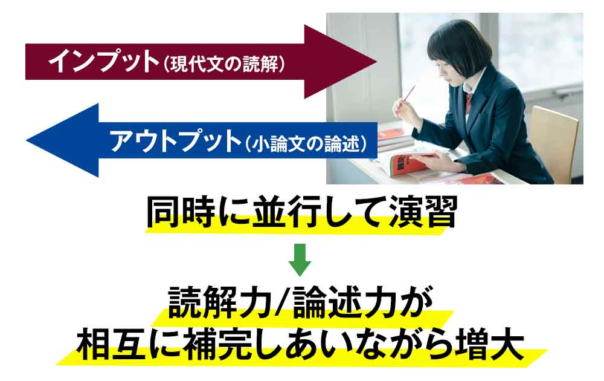
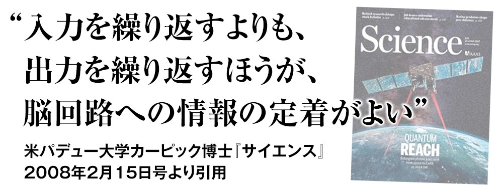
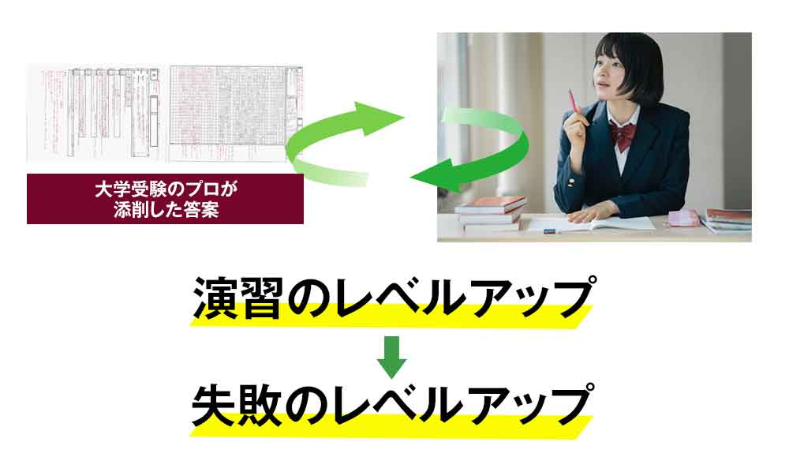
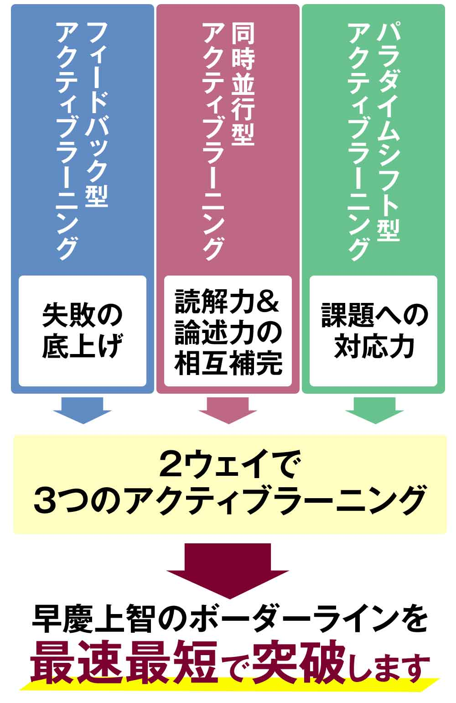
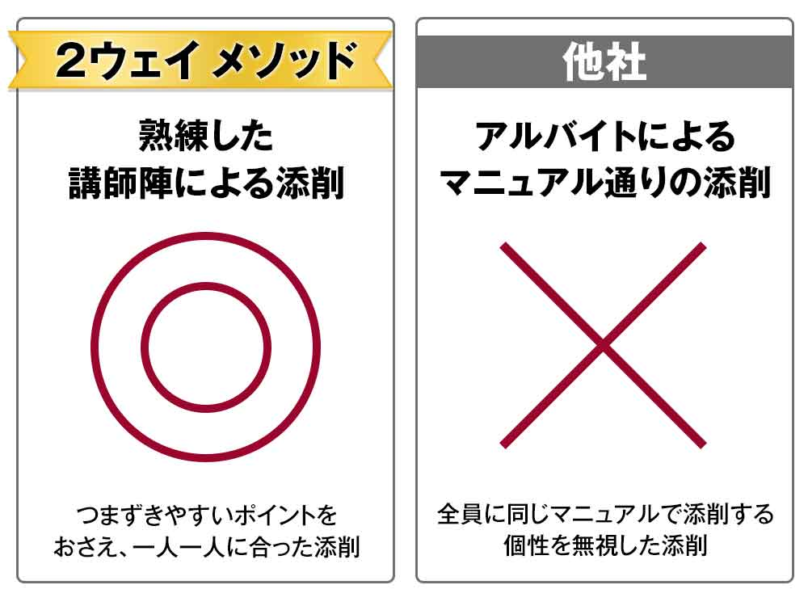

早慶上智を併願して
最速最短でボーダーラインを
突破します。
それが現代文と小論文の
同時並行演習
「２ウェイ メソッド」です。
※令和２年までに早慶上智受験者２５名中、２１人がいずれかに合格しています。
「２ウェイメソッド」だと
なぜ早慶上智の合格率が
高いのか動画で解説します。
２ウェイ メソッド 現代文編
現代文 合格のカギは要約にあり！最速最短でボーダーを突破する読解法です。
２ウェイ メソッド 小論文編
小論文の勝負は立論で決まる！合格する小論文とは？
他社との違い
３つのポイント
POINT.1
最短翌日
スピード返却
「どんなこと書いたっけ？」
あなたが答案の内容を忘れることはありません。
POINT.２
一般の塾予備校では
できない
アクティブラーニング
一方通行の「わかったつもり」にさせません。
POINT.３
指導経験豊富な
プロの添削
アルバイトのマニュアル添削ではありません。
POINT.1 圧倒的なスピード返却
受け取った答案は、最短で翌日にお返しします。(土日祝日と12/31-1/3はお休みをいただきます）
なぜ、スピードにこだわるのか？
「ＰＤＣＡサイクル」を速く回すためです。
ＰＤＣＡ＝計画(Plan)→実行(Do)
→評価(Check)→対策(Action)
学校でやりましたね？
でも、フットプリンツの演習は「ＤＣＡＰ（ディーキャップ）」で進めます。
ＤＣＡＰ＝書く(Do)
→添削(Check)
→フィードバック(Action)
→次の演習(Plan)
のサイクルです。
最初から完璧な小論文を書こうとするから、「Plan」「Plan」「Plan」…立論段階でつまずいて、書くのがイヤになってしまいます。
だから、まず「Do（書く）」です。

書いて、失敗して、添削されたものを速く次の演習にフィードバックしていきます。
「ＤＣＡＰ（ディーキャップ）」のサイクルを速く回すことで、「失敗速度」を上げる、
それを次の演習にフィードバックしていくので、演習のレベルがどんどん上がっていきます。
本番の試験会場に持っていく「失敗」をなくす、
その必然的な結果が、最速最短ボーダー突破です。
「月イチ」の演習で、返却に１週間もかかる、
そんな添削をしていたら、サイクルが回りだすころには入試が終わっています。

『留こみ！』「エビングハウスの忘却曲線で分かる、最適な復習のタイミング」より引用
「それでも、それなりに合格実績を出しているではないか？」
それは、最初から合格レベルの受験生が集まっているからです。
これから実力をつけてボーダーラインまで詰めていこうとする受験生の演習ではありません。
だから、フットプリンツでは、受け取った答案をすぐ返します。

（当社比）
現代文と小論文で伸びていきますから、学習効果はさらにグラフの2倍です。
POINT.２徹底したアクティブラーニング
① パラダイムシフト型
アクティブラーニング

・現代文…要約（全体）して解答（部分）
・小論文…立論（全体）して論述（部分）
全体をざっくり見わたして、部分を詰めていく視点を徹底して演習します。
「全体/部分」のパラダイム（思考の枠組み）を常にシフト（変換）し続けます。
この演習で、あなたは望遠鏡（巨視的）と顕微鏡（微視的）、二つの道具（視点）を手に入れます。
これによってあなたは、設問一つ一つ（部分）にしがみついてタイムアウト！要約系の高配点問題（全体）をとりこぼす、ということがなくなります。
これが最速最短ボーダー突破の理由です。
② 同時並行型
アクティブラーニング

・お手頃価格の動画講義
・わかりやすい市販の参考書
・塾予備校カリスマ講師の神授業
これらに決定的に欠けているものはなんでしょうか？
共通しているのは、「インプット」のみの１ウェイだということです。
「わかりやすい」
でも、それは「わかったつもり」になっているだけです。
大手予備校で授業をとっているのに国語の成績が思うように伸びない、直前になって駆け込んできた受講生も少なからずおります。
「現代文がどうしてもわかりません」
受験で小論文がないのに、小論文を書いています。
神奈川県立柏陽高校
匿名希望
【２ウェイメソッド受講実績】
早稲田大学政治経済学部経済学科進学
早稲田大学商学部合格
早稲田大学文化構想学部合格
上智大学経済学部経営学科合格
上智大学総合人間科学部教育学科合格
私が、フットプリンツの受講を始めたのは10月ごろでした。
受講を決めたのは、「自分の力だけではもうこれ以上実力は伸びない」と確信していたからです。
私は浪人生ということもあり、自分なりには国語の対策をしてきたつもりでした。
ところが、いざ過去問を解くと、50～60％しか得点できませんでした。
現役のときも、偏差値は70を超えていたにもかかわらず、早慶上智全てに不合格。上智の国語の点数を開示してみると、26/100という悲惨な結果でした。
このままではまた不合格になることが見えていました。そこで、「自分の解き方の何がいけないのか」を知るために、解き方・考え方を添削してくれるフットプリンツに駆け込みました。残された時間はあと4カ月でした。
「君は全体への視点が足りない。」
これが、最初の添削で谷村先生に指摘していただいたことでした。
確かに、今までは傍線に当たるたびに設問を解いており、全体の論旨を考えていませんでした。
今思えば、まさにその視点こそが「模試」と「入試問題」の差を埋めるのに必要であったように思います。
それ以後は、設問に取り掛かる前に本文全体を要約する練習を行いました。すると、信じられないほど問題が解けるようになり、結果として早稲田・上智の受験した全ての学部に合格することができました。
谷村先生は添削を通して、私に足りないものを気づかせてくださいました。足りないものは、1人1人異なります。
これを読んでくださっている皆さんの中にも、わずかな修正で点数が劇的に伸びる人がいるのではないかと思います。
時間がなくとも、最後の追い込みで逆転することは可能です。
私は残り時間が少ない中、先生を信じ、最後まで努力して良かったと思います。
ありがとうございました！！！
※これは個人の実体験をもとにした感想です。成果を保証するものではありません。
都立国際高校
Ｅ・Ｒさん
【２ウェイメソッド受講実績】
上智大学外国語学部英語学科進学
津田塾大学学芸学部英文学科合格
青山学院大学総合文化政策学部総合文化政策学科合格
現代文に関して私は、ここにたどり着くまで予備校に通っていました。
しかし、自分の力が伸びていないという不安感を抱き、自分の力をマンツーマンで見てくれる授業（？）を探しました。
そして入試約1カ月前に出会ったのが、このフットプリンツです。
たった４回の授業でしたが、内容はどれも濃かったです。
根拠を、頭でおぼろげにではなく書いて明確にすること。これは現代文だけでなくほとんどの教科に通ずることだと、この授業を受けて思いました。
先生からのアドバイスは、勉強中のみでなく、入試の最中にも役立ちました！私の場合、入試前日まで試験時間内に答えを書ききることができなかったのですが、当日は、今までの学習やアドバイスのおかげで、終了５分前に書き終えることができました。
先生、御手を煩わせることが多くて失礼いたしました。そして、ありがとうございます！！
※これは個人の実体験をもとにした感想です。成果を保証するものではありません。
大阪府立茨木高校
Ｎ・Ｍさん
【２ウェイメソッド受講実績】
同志社大学法学部進学
まず、先生にお詫びと感謝を述べさせてください。
センター試験の願書を出し忘れるという大失態のため、目指す大学が受けられなくなり、先生をガックリさせてしまいごめんなさい。
そして、それに対する解決策と新しい道を一生懸命模索していただき、私以上に悩み考えてくださった先生に感謝します。
結果的に、目指した大学には行きませんが、先生とともに考え、自分が下した決断に満足して入学式を迎えられます！！ありがとう、先生！
フットプリンツに入会する決め手となったのは、
１．解答根拠を書かせ、それを添削するメソッド
２．ブログから伝わる谷村先生の親身さ
です。
これは、ありそうでない、とても効果のある講座だと思います。
解答根拠を書くという行為は、勘で解くことをなくし、文章を理解しようと努める意識を高め、さらにそれが常となっていきます。
プラスアルファの小論文も、自分で立論し書く難しさに直面することで、現代文がこれまでとは違った視点で読めるようになります。
なので、受験の必要性の有無を問わず、是非小論文とセットで解くことをお薦めします！
私も初め小論文に乗り気ではなかったのですが、ここでうんうん脳味噌を使いまくった一年間は、これからの大学生活の糧となる、と信じています。
※これは個人の実体験をもとにした感想です。成果を保証するものではありません。
現代文（インプット）と小論文（アウトプット）の 「２ウェイ」の演習だから「わかったつもり」にさせません。

「現代文の成績が上がった！」
その時、あなたは小論文も書けるようになっています。
「小論文が書けるようになった！」
その時、あなたの現代文の成績も上がっています。
これがフットプリンツの「２ウェイ メソッド」です。
「２ウェイ」で演習ができるのは、フットプリンツだけです。
③ フィードバック型
アクティブラーニング

前回の演習で何がいけなかったのか、正しかったのか、
それを次の演習にすぐいかしていきます。
やればやるほど、やる…
だから演習のレベルそのものがどんどん上がっていきます。
演習のレベルが上がるから、失敗のレベルも上がる、
それが「成績が伸びる」ということです。
・現代文と小論文の「２ウェイ」
・演習と添削の「２ウェイ」
だから、あなたの演習は常にアクティブ！一方通行の１ウェイではありません。
その必然的な結果が最速最短ボーダー突破です。

POINT３ 指導経験豊富なプロの添削
フットプリンツでは、高校で、塾予備校で、受験生を指導してきた者だけが添削にあたります。
大学入試の現場を知らない、アルバイトのマニュアル添削ではありません。
現場を知らないのに添削、
キレイな字で、事細かに添削してくれるかもしれません。
でも、その添削は、「期限内にマニュアルにそって添削する」ことが目的になっています。

「受講生の第一志望校合格」
これがフットプリンツの添削担当者と受講生が共有する唯一の目的です。
「添削」とは、コトバの添削だと思われがちですが、フットプリンツの添削は違います。
「思考のフレーム」、考え方の枠組みそのものを添削していきます。
受講生は添削担当者の考え方をコピー
添削担当者は受講生の考え方をコピー
そこにあるのは、深い思考のコミュニケーションです。
重箱のスミッコをほじくるような添削はしません。
考え方の大枠をシフトする、それによってあなたは、最小限の演習で早慶上智のボーダーラインに到達します。
「２ウェイ メソッド」受講の流れ

-
STEP1現代文の読解
課題文を読解し、要約して本文全体の見取り図を作成、設問には入りません。
解答根拠を書いて、設問に解答していきます。
動画の解説を見て、課題文の内容を確認します。
-
STEP2小論文の論述
自分が述べようとしている意見の要旨（問題点・根拠・結論）を書きます。
要旨をもとに立論、自分の意見を組み立てます。
作成した「立論メモ」を確認しながら論述します。
-
STEP3提出
スキャナ、スマホでＰＤＦデータにしてグーグルドライブの所定のフォルダに提出、またはメールに添付して提出してください。
スマホの写真データをそのまま送っていただいてもけっこうです。
-
STEP4添削
受け取ったデータを添削していきます。
-
STEP5返却
最短で翌日にＰＤＦデータで返却。youtubeの動画で次の演習にフィードバックする内容をお伝えします。
-
STEP6次の演習にフィードバック
それまでに受けたフィードバックの内容をふまえて次の演習に入ります。
受講費用
| 入会金 | ￥3,500（消費税別） |
|---|---|
| Aコース | 【2ウェイ メソッド】 現代文/小論文 １セット４回添削 現代文 答案４枚添削 小論文 答案４枚添削:再添削可 ＋youtubeの動画で改善点をフィードバック
全１６題４セット （自分で問題を選んで演習できます。） |
| 添削費用 | １セット ￥36,000（消費税別） |
さらに５つの特典
特典その１
いつでも再添削可能
現代文は再添削してもあまり効果がありません。
小論文は、毎回、再添削可です。
同じ問題点について、賛成と反対、両面の立場から論じてみる、具体例を変えてみる、など、工夫次第でいろいろな活用の仕方があるでしょう。
とにかく次に進みたい、
という方は、どんどん先に進んでください。
あくまであなたの希望、強制ではありません。
一とおり進んだところで、自分で納得いかない論を書き直してみてもよいでしょう。
再添削はいつでも提出可能です。
特典その２
合格者たちの添削答案を配布
添削したみなさんの答案に、合格していった先輩たちの添削答案（個人情報は削除してあります）を添付してお返しします。
合格していった先輩がどのように考えて解答したのか、何を、なぜまちがえたのか、一目瞭然です。
「小論文の書き方がどうしてもわからない…」
だったら、先輩の立論に乗っかって再添削を受けてください。
具体例だけ変えるとか。
先輩たちが残してくれた答案は、フットプリンツの貴重な財産、
それをあなたに渡していきます。
何のために？
あなたの合格のために！
「学ぶ」の語源は「まねぶ（まねる）」って、古文で教わりましたか？
合格者たちの思考のルートを「まねぶ」、そこに合格への最速最短ルートがあります。
特典その３
30日間完全返金保証
どうしても小論文が書けない…
ご安心ください。
フットプリンツは、メールで、電話で、それでだめならスカイプで、あなたを徹底サポートしていきます。
それでも、メンドクサイ、自分に合わない、ということはあり得ます。
２、３回提出してみて、ダメそうだったらキャンセルしてください。
30日以内であればいただいた諸費用を全額返金いたします。
こちらからキャンセルの理由を聞くこともありません。
特典その４
古文・漢文の講義はすべて無料
古文・漢文・現代文・小論文は国語という教科の一部分でしかない。
フットプリンツは国語全体を一教科としてフルサポートします。
現代文だけ一所懸命やったって、国語の成績は伸びません。
あたりまえですね。
フットプリンツでは、古文の参考書サイト「古文のツボ」も運営しております。
そのトップページで国語の成績を伸ばす優先順位について書いてあります。
１、古文漢文、時間かけずに点稼ぐ。
２、かせいだ時間を評論に注いで要約系高配点ゲット。
です。
現代文の成績を伸ばすなら、まずは「古文漢文時間かけずに点かせぐ」が前提になります。
だから、この講座を受講してくれたあなたには、古文漢文を無料で講義していきます。
添削担当者（谷村）はもともと古文の講師ですからね。
「古文のツボ」の中級編（初級者は入門編から始めてください）「確認テスト」を受験してください。
それをベースにして、上級編の物語話型（はなしのパターン）について、講義します。
１講義古文読解10題前後、動画で講義していきます。
月イチペースで動画配信、漢文句法、漢文読解とあわせてセンターまでに100題超、講義していきます。
フットプリンツの受講生は、すべて無料、質問もし放題です。
他の塾との比較
予備校で古文・漢文・現代文・小論文を別々に受講した場合と費用を比べてみてください。
フットプリンツで国語そのものを演習する方がはるかに安くすみます。
特典その５
あなたへのフィードバックを動画で無料配信
・無料お試し添削（現代文）
…動画解説付き
・２ウェイメソッド（現代文）
…動画解説付き
・「小論文の書き方」」
…動画で解説
「無料お試し添削」「２ウェイメソッド現代文/小論文（全16題）」の現代文には、すべて動画の解説がついています。
さらに、小論文初心者のために、「小論文の書き方」を動画で解説しています。
「常に全体を見わたして、部分に取り組む」
フットプリンツの演習のテーマなのですが、これが伝わりづらい！
手書きで添削していたころは、「図」で説明していました。
でも、今なら動画でお伝えできます。
現代文の教材にはすべて動画の解説がついています。
スマホで、ＰＣで、解説動画をご覧ください。
その画面に映っているのが、合格者たちの視点です。
【無料お試し添削紹介動画】
「無料お試し添削」現代文解説のまとめの部分です。
「無料お試し添削」には動画解説「小論文の書き方」もついています。
さらに、
添削を終えた答案をもとに、次回の演習にフィードバックする内容をユーチューブ上で配信していきます。
視聴できるのはあなただけです。
自分の答案を見ながら、改善点をピンポイントで把握できます。
これによって、あなたの演習レベルが最速最短で上がっていきます。
【添削答案のフィードバック サンプル動画】
添削答案をもとに、次の演習への改善点をお伝えします。
あなただけの動画です。
合格者たちの「視点」が、そのままあなたの「視点」になります。
合格者の声
神奈川県私立女子高
匿名希望
【２ウェイメソッド受講実績】
早稲田大学社会科学部進学
明治大学商学部合格
私は谷村先生に1ヶ月半ほどお世話になりました。短期間ではありましたが、先生のおかげで国語が伸び、入試で使えるレベルになったと思います。
私は以前から国語全般に苦手意識があり、かつ高3から文転したため、古文に関しては古文単語と助動詞活用表しか分からない状態でした。そんな私にも谷村先生はわかりやすく教えてくださり、特に古文常識やストーリー展開のパターンは入試にとても役に立ちました。
また、谷村先生は早稲田大学が頻繁に出題する内容を細かく分析されているため、入試まであまり時間のなかった私でも重要な部分だけを抽出して学ぶことができ、効率的な勉強ができました。
現代文では根拠に基づいて考え、全体をみることの大切さ、小論文では枠組みを作ってから書き出すことの重要さを教えてくださりました。これを解く時に意識することによって、入試直前期でも正答率が上がりました。さらにセンター試験本番では、センタープレテストから40点も上げ、自己最高点を取ることができました。
入試では、周りの人が解けない問題を正解して差をつけるのではなく、いかに周りの人が解ける問題でミスをしないかが重要です。特に入試直前期には焦って、難しい発展的な内容に手を出しがちですが、基礎を固めることが良い結果に繋がると思います。短い間でしたが、本当にありがとうございました。
※これは個人の実体験をもとにした感想です。成果を保証するものではありません。
攻玉社高校
Ｉ・Ｈくん
【２ウェイメソッド受講実績】
一橋大学経済学部進学
慶応義塾大学商学部合格
明治大学政治経済学部経済学科合格
立教大学経済学部経済学科合格
一橋大学経済学部に合格しましたＩ・Ｈと申します。谷村先生には高校2年から本格的にお世話になりました。私はもともと国語、特に古文が大の苦手でした。その原因はいくつか考えられます。
例えば、古文単語、古文常識を覚えていなかったこと、古文の文法、特に識別を深く理解していなかったことなどでしょう。しかし、谷村先生のテキストを進めていくうちに、和歌の押さえるべきポイント、古文においてカギとなる敬語の見極め方や反語を用いた省略ポイントの理解の仕方などを的確に自分のものにし、使いこなせるようになりました。
谷村先生の教え方は、一般的な、ただ古文や現代文の知識を詰め込ませるようなものではなく、一つの知識から多くの関連事項、知識を得られるものです。また、テキストも分野ごとに一つの大学にこだわるのではなく、多くの大学の良問が集まっており、テキストをこなすだけで多くの情報、解き方を得られるものです。だから、国語が大の苦手だった私も、国語という科目に苦手意識を抱くことなく、入試に挑むことができました。
最後にはなりますが、努力嫌いな私を一橋大学という本気で行きたかった大学の合格に導いてくれた谷村先生には感謝しようにもしきれません。本当にありがとうございました。
※これは個人の実体験をもとにした感想です。成果を保証するものではありません。
渋谷学園幕張高校
Ｅ・Ｒくん
【２ウェイメソッド受講実績】
東北大学医学部医学科進学
防衛医科大学校医学科合格
谷村先生、本当にありがとうございました。東北大学医学部に合格できたのも先生のおかげだと思っています。
私が谷村先生に出会ったのは高3の二学期が始まった頃でした。その当時、国語（特に古典）が苦手で、センター試験の過去問を解いても国語だけは6～7割程度の点数しかとることができませんでした。医学部に合格するためにはセンター9割以上が求められていますが、国語だけは即席に成績を上げるのが難しいと半ば諦めかけていた頃でした。
今思うと大変申し訳ないのですが、初めは半信半疑。「国語は谷村先生を信じてついて行けば大丈夫と聞いているから、ここは藁をもすがるつもりでやってみよう」と親から半ば押し切られた形で授業を受け始めました。
しかし、すぐに半信半疑な気持ちは消え去りました。谷村先生は、長年の指導経験で築き上げられてきた明確なテキストや解法を示してくださり、丁寧な指導で私が理解するまで何度も説明してくださいました。
特に苦手な古文では、文法事項だけでなく、当時の文化に基づいたストーリー展開を教えてくださったので、ある程度内容を予測して文章を素早く読めるようになりました。
そして徐々に点数が伸びるようになり、緊張のセンター本番、苦手だったはずの国語が9割越え。二次試験にも自信をもって望むことが出来ました。
もし谷村先生との出会いがなかったら、大学受験の成功はなかったと思います。
先生を信じてついて行って良かったと思っています。
※これは個人の実体験をもとにした感想です。成果を保証するものではありません。
女子学院
Ｉ・Ｙさん
【２ウェイメソッド受講実績】
東京医科歯科大学医学部医学科進学
慶応義塾大学医学部医学科合格
東京慈恵医科大学医学部医学科合格
国立医学部入試においては、センター試験の配点が高く、必然的に国語の配点も高いという事実があります。
国語が苦手科目だった帰国子女で、学校の授業でも古文漢文をとることができなかったのに、国立医学部に行きたかった私にとっては、センター国語で失敗しないことが、大きなプレッシャーで、十分に対策しなければならないと危機感を感じていました。
しかし、先生のテキストと地道な努力により、古文漢文の実力はだんだん上がっていき、現代文も多様なテーマの文章に慣れることができました。
おかげでセンターの平均点が１００点を切ったにも関わらず、８割を超えられて、周りに差をつけられたと思います。
国語のおかげで合格できたといっても過言ではないと思います。ありがとうございました。
※これは個人の実体験をもとにした感想です。成果を保証するものではありません。
国府台女子学院高等部
Ｔ・Ｍさん
【２ウェイメソッド受講実績】
慶應義塾大学法学部法律学科進学
早稲田大学法学部合格
上智大学法学部法律学科合格
私は海外滞在経験があり、英語に大きな不安を抱えることはなかったのですが、国語に関しては、なかなか自信を持つことができずにいました。
インターネットでフットプリンツの講座までたどりついたのは夏前のことでした。それまでは、どうしても感覚で解いてしまうことが多く、成績も不安定でした。自分で市販の参考書をいくつか試していたけれど、入試の国語に関して安心できるというところまでに達することはありませんでした。
フットプリンツを始めて、なるほどこうすればよかったのか、と初めて納得できたのを今でも覚えています。
これと並行して小論文を添削してくれるのは効率も良く、より真剣に国語の文章と向き合うことができたし、最終的には慶応の小論文も書き上げることができるようになりました。
フットプリンツでは谷村先生が厳選した文章が16回分あり、ひとつひとつこなしていく中で一歩ずつ成長していく自分を必ず感じられるはずです。
あせらず一歩ずつ真剣に取り組むことが大切だと思います。これから始めようと考えている人、すでに始めている人、谷村先生を信じてぜひ頑張ってください。
英語に自信がある人は他の教科に時間を回すことが可能なはずだから、ぜひ、フットプリンツで脳ミソの汗をたくさんかいてみてください！
※これは個人の実体験をもとにした感想です。成果を保証するものではありません。
茗溪学園高等学校
Ｈ・Ｍさん
【２ウェイメソッド受講実績】
慶應義塾大学環境情報学部進学
「あと１週間しかないのですが、慶應大学ＳＦＣに行きたいんです！」こんなにも無謀な挑戦を谷村先生にご相談したのは、入試まで残り７日に迫った時のことでした。
入学試験の直前から小論文の勉強を始めることに、精神的に大変焦っていたのですが、谷村先生は「やるからにはお互い本気で頑張りましょう」と快諾して下さいました。
実は、私は昨年度も先生の講座を受講していたので、小論文の基礎は理解していたものの、果たして短時間で１年間分のブランクを埋めることが可能だろうかと不安になっていました。
さらに、ＳＦＣの小論文は、よく書店で目にする『小論文の書き方紹介本』で紹介されているような典型的な型に当てはめただけでは到底太刀打ちできない問題が出題されるため、そういった問題の特性にも不安を感じていました。
しかし、先生は、電話やメールで頻繁に連絡を取って下さり、その際に私の興味のある分野や進路等を分析し、それらを踏えた上で私らしさが活かせるような解答方法を教えて下さいました。
そのお陰で、たった１週間という短時間でも、自分らしさを最大限にアピールできるような小論文を書き上げる力を養うことができ、結果的に志望大学に合格することができました。
こういった、個性が活きた小論文の書き方が身に付く点が谷村先生の講座の特徴ではないかと思います。そして、このような特徴があるからこそ、短時間で、あらゆる問題を合格レベルまで持っていける安定した力が付くのだと思います。
※これは個人の実体験をもとにした感想です。成果を保証するものではありません。
文教大学付属高校
Ｎ・Ｎくん
【２ウェイメソッド受講実績】
上智大学外国語学部進学
早稲田大学教育学部合格
私は、現役の頃,特に現代文に苦手意識があり、高２の４月から現代文の授業を予備校で受け、自分で現代文の参考書を５冊もやりましたが、どうも成績はのびず、模試ではいつも国語の偏差値が30台から41.2ぐらいの成績しか取れず、当然ながら浪人することになりました。
浪人生になってある塾に通い、谷村先生に出会い何かが変わりました。そこでは、谷村先生は古文の担当をなさっていましたが、古文だけではなく、現代文や受験のアドバイスもしてくださり、とても助かりました。
その中で特に助かったのが、現代文の正確な読み方、攻撃的読解、そしてなぜ現代文ができないのか、などのアドバイスをしてくださったことです。
そして何よりも、いろいろな先生に出会った私の経験上、谷村先生は他の予備校講師の誰よりも生徒を中心に考えている先生だと思いました。質問に行くと、嫌な顔ひとつせず、私が理解できるまで熱心に指導してくださいました。
谷村先生に出会い、受験指導してくださったことを心から感謝しています。
※これは個人の実体験をもとにした感想です。成果を保証するものではありません。
桐蔭学園高校
Ｍ・Ｏくん
【２ウェイメソッド受講実績】
早稲田大学法学部進学
早稲田大学文化構想学部合格
早稲田大学人間科学部合格
先生の授業を通じて、自分に欠けていた古典文法の知識を的確に指摘して頂き、現代文の正確な読み方を指導して頂けた事で、「これさえ補えば受かる！」というポイントがはっきりと認識出来る様になり、受験に対する自信が湧いて来る様になりました。
またfootprintsの教材は入試頻出の重要事項が非常に簡潔に編まれており、行き詰まりを感じていた国語学習の大きな助けとなり、受験会場での見直しにも効果を発揮しました。
先生の、実力に裏付けられた指導もさる事ながら、温和な御人柄に緊張を解きほぐして頂いたおかげで、なかなか開ける事の出来なかった大学への扉を開く事が出来ました。
国語学習にピリピリと不安を感じている人は、是非footprintsで合格可能な実力を磨いて下さい。
※これは個人の実体験をもとにした感想です。成果を保証するものではありません。
【お母様の声】
谷村先生には、娘、息子の二人がお世話になりました。オリジナルのテキストと課題や細かく丁寧な添削指導により、苦手な国語でも点が取れるようになりました。
また、インターネットを使ったオンタイムの授業では、日時を相談して決めることができたので、学校や他教科の塾と予定を合わせることができ、自宅で受講できるので無駄な時間も省くことができました。
なにより直接やり取りをして指導していただくことにより疑問点もなくなったり、先生のお人柄にも触れることにより信頼・安心して取り組むことができたりしたことで合格をいただけたと思います。ご指導ありがとうございました。
２ウェイ メソッド 現代文/小論文
１セット４回添削 ￥36,000（消費税別）
16題４セット ￥144,000（消費税別）
本日、残り名様